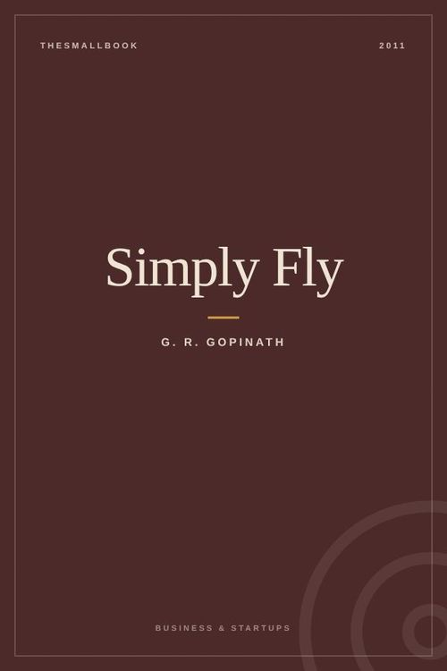

Library › Authors › G. R. Gopinath
Books by G. R. Gopinath
G. R. Gopinath has one book in the library. Every book here is read down to the big idea, the lessons, the lines worth keeping and the actions worth taking. Start with the summary, then buy the full book if it earns a place on your shelf.

Simply Fly: A Deccan Odyssey
2011 · 13 min · 8 lessons
Captain Gopinath built Air Deccan from nothing to prove the poorest Indian could fly, and paid for the revolution when consolidation ate his airline.
G. R. Gopinath, a retired army captain and failed farmer, founded Air Deccan in 2003 with one aircraft and a mission: every Indian would fly at one rupee fares. He invented Indian low-cost aviation, forced full-service carriers to slash prices, made Hubli and Madurai reachable, and filled planes with first-time flyers in lungis and turbans. But low fares in a heavily taxed, fuel-importing market meant losses year after year. Under investor pressure he sold control to Kingfisher's Vijay Mallya in 2007, who merged...
Lessons in the summary
- The Mission Must Survive the Spreadsheet
- Regulation Is a Competitor With a Government
- Cost Culture Is Set by the Founder's Own Behavior
- Growth Can Outrun the Org That Delivers It
- Selling Control Has a Founder's Grief Nobody Warns You About
- Pioneers Get the Arrows, Settlers Get the Land
- Failure at 40 Is Raw Material, Not a Verdict
- A Brand Belongs to the Customer the Day They Claim It
Lines worth keeping
- I want to make the common man of India fly.
- Passion is a poor business plan unless it is married to arithmetic.
- A pioneer gets the arrows, and the settlers get the land.
Questions G. R. Gopinath helps answer
Read nearby authors next
- Devdutt Pattanaik 5 books
- Rashmi Bansal 5 books
- Robin Sharma 5 books
- Chetan Bhagat 4 books
- Seth Godin 4 books
- Alex Hormozi 3 books
- Gurcharan Das 3 books
- Nir Eyal 3 books
Questions G. R. Gopinath helps answer
Where should I start with G. R. Gopinath? Start with Simply Fly: A Deccan Odyssey: Captain Gopinath built Air Deccan from nothing to prove the poorest Indian could fly, and paid for the revolution when consolidation ate his airline.